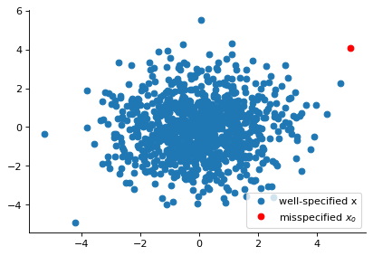
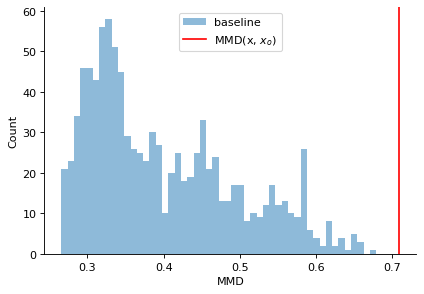

Model Misspecification in SBI¶
In this tutorial, we would describe how to detect prior misspecification, one instance of model misspecification in Simulation-based Inference (SBI), and demonstrate it on two simulators: a toy 2d Gaussian mean inference task, and the Hodgkin-Huxley model from neuroscience. General familiarity with the SBI toolkit will be assumed. Note that other forms of model misspecification such as misspecified likelihood or presence of noise are also prevalent in the SBI literature [1], but the scope of this tutorial would be limited to prior misspecification.
References: - [1][Schmitt et al, 2024](https://arxiv.org/abs/2112.08866) - [2][Kelly et al, 2025](https://arxiv.org/abs/2503.12315) - [3][Gretton et al, 2012](https://www.jmlr.org/papers/volume13/gretton12a/gretton12a.pdf)
import matplotlib as mpl
import matplotlib.pyplot as plt
import torch
import torch.distributions as dist
from sbi.diagnostics.misspecification import (
calc_misspecification_mmd, # Import the MMD diagnostic
)
from sbi.inference import NPE
from sbi.neural_nets import posterior_nn
from sbi.neural_nets.embedding_nets import FCEmbedding
# Set seed
seed = 2025
torch.manual_seed(seed)
# remove top and right axis from plots
mpl.rcParams["axes.spines.right"] = False
mpl.rcParams["axes.spines.top"] = False
1. 2D Gaussian Simulator¶
In this example, we work with the following simulator: the prior \(\theta \sim \mathcal{N}(0, I_d)\), and the observations \(x|\theta \sim \mathcal{N}(\theta, I_d)\), where \(d\) is the dimensionality of the problem. For the purposes of this example, we would assume the observations, i.e., \(x_o\) would come from the (true) data generating process above.
Now we demonstrate a concrete example of model misspecification scenario in SBI. We assume our posterior inference network (e.g., NPE) would be fitted on \((\theta, x)\) pairs where the \(\theta\) values are sampled from \(\mathcal{N}(\mu, I_d)\) (instead of \(\mathcal{N}(0, I_d)\), i.e., with some offset mean \(\mu\)), and the corresponding observations \(x\) were generated using the simulator as above. We refer to this manifestation of model misspecification as prior misspecification, and demonstrate how we can identify this using (one or many) observations \(x_o\) during test time, following the maximum mean discrepancy (MMD) based approach outlined in [1].
The core idea of the method is to compute a distribution of MMD values among the synthetic simulations (\(x\)) the model was trained on, and perform an out-of-distribution/p-value check for the MMD between the synthetic simulations and the \(x_o\). Since we will often encounter only one observation \(x_o\) during inference, we would make use of the biased version of sample-based MMD recommended in [3].
Define the ground-truth and misspecified priors¶
The “ground-truth” prior simply means the \(x_{obs}\) will come from this prior distribution through the simulator. The misspecified prior: the NPE will be trained on \((\theta, x)\) pairs coming from this prior. Note that the simulator code is same in both cases.
dim = 2 # observation dimension
# true prior -- the observation comes from here
mean_true = torch.zeros(dim)
cov_true = torch.eye(dim)
prior_true = dist.MultivariateNormal(loc=mean_true, covariance_matrix=cov_true)
# the NPE will be trained on samples from this misspecified prior
def give_misspec_prior(mu0, tau0):
if mu0.ndim > 1:
raise ValueError("mu0 should be a 1d tensor of shape [dim]")
dim = mu0.shape[0]
return dist.MultivariateNormal(loc=mu0, covariance_matrix=tau0 * torch.eye(dim))
offset = 4
mu0 = mean_true + offset # just offset, applies in all directions
tau0 = 1.0 # 1.0 means no change in covariance matrix
prior_mis = give_misspec_prior(mu0, tau0)
def simulator(theta):
return theta + torch.randn_like(theta)
Create the training dataset for the NPE, i.e., \((\theta, x)\) pairs¶
As we will see later, we can only train one NPE on the well-specified dataset, and simulate the other scenarios exploiting the symmetry present in our setting. We will also generate a validation dataset, to compute many self MMDs or the distribution of MMDs which will be utilised later for the actual misspecification check.
num_simulations = 1000
# generate training data for clean/well-specified model
theta_well = prior_true.sample((num_simulations,))
x_well = simulator(theta_well)
# validation set to compute MMD distribution in the well-specified case
# this could just be a subset of the training data
num_validations_mmd = 1000
theta_val_well = prior_true.sample((num_validations_mmd,))
x_val_well = simulator(theta_val_well)
print(theta_well.shape, theta_val_well.shape)
torch.Size([1000, 2]) torch.Size([1000, 2])
Train our inference object¶
We are only training one NPE inference with an embedding network to demonstrate the MMD-based misspecification check both on the original x-space and the embedding space.
def train_npe_with_embedding(theta, x, prior, embeddding_net, **kwargs):
neural_posterior = posterior_nn(model="maf", embedding_net=embeddding_net)
inference = NPE(prior=prior, density_estimator=neural_posterior, **kwargs)
inference = inference.append_simulations(theta, x)
_ = inference.train()
return inference
emb_net_well = FCEmbedding(
input_dim=dim, output_dim=dim, num_layers=2, num_hiddens=20
) # minimal embedding network
NPE_well_embd = train_npe_with_embedding(
theta_well, x_well, prior=prior_true, embeddding_net=emb_net_well
) # modified the emb_net
Neural network successfully converged after 199 epochs.
Create the observations \(x_{obs}\) to do inference¶
We will generate two observations: one from the ground-truth prior to demonstrate the case where we do not have any model misspecification. The second observation will be generated from the misspecified prior to simulate the model misspecification scenario when our inference was trained on the misspecified data, but the observation comes from the ground-truth prior.
# do inference given observed data
num_observations = 1
theta_o = prior_true.sample((num_observations,))
x_o = simulator(theta_o)
# we can also create observation from the misspecified prior x_o_mis
theta_o_mis = prior_mis.sample((num_observations,))
x_o_mis = simulator(theta_o_mis)
plt.figure(figsize=(6, 4), dpi=80)
plt.plot(x_val_well[:, 0], x_val_well[:, 1], "o", label="well-specified x")
plt.plot(x_o_mis[:, 0], x_o_mis[:, 1], "o", color="red", label=r"misspecified $x_o$")
plt.legend(loc='lower right')
plt.show()

Misspecification detection¶
Here we only demonstrate misspecification detection on the embedding space. Note that the corresponding scenarios on the x-space could be simply tested by passing inference=None and mode=x_space in the functions below.
The primary interface to detect prior misspecification is through the calc_misspecification_mmd() function that expects the following arguments:
- inference object: this is the trained NPE object with or without embedding network
- x_obs: the actual observation, we detect whether this observation is misspecified with respect to the distribution seen by the NPE object during training
- x: a reference validation set of synthetic observations from the training distribution, this could in principle be a separated out subset of the training observations,
but here we choose to pass a validation set
- mode: whether to compute the mmds in the embedding space (embedding) or the original observation space (x_space).
The function returns p-value of the test, along with a tuple of the reference/baseline mmds and the mmd between x_obs and the validation set x. We can simply inspect the p-value and also visualize the distribution as done below:
p_val, (mmds_baseline, mmd) = calc_misspecification_mmd(
inference=NPE_well_embd, x_obs=x_o, x=x_val_well, mode='embedding'
)
print(f"p-val: {p_val:.6f}")
plt.figure(figsize=(6, 4), dpi=80)
plt.hist(mmds_baseline.numpy(), bins=50,alpha=0.5, label='baseline')
plt.axvline(mmd.item(), color="red", label=r'MMD(x, $x_o$)')
plt.ylabel('Count')
plt.xlabel('MMD')
plt.legend()
plt.show()
p-val: 0.501000

Interpretation: In the above example, the observed data \(x_o\) comes from the same ground truth prior as what the NPE estimator was trained on. As detected by the check above, the \(p\)-value for the null hypothesis \(H_0\) (that the distribution of MMDs between samples in x_val_well (intra) and the distribution of MMDs between x_val_well and x_o are same) came out to be \(0.501 \gt 0.05\), so we fail to reject the null hypothesis, i.e., no misspecification is detected in this case.
Now we turn to the situation where there is a misspecification.
p_val, (mmds_baseline, mmd) = calc_misspecification_mmd(
inference=NPE_well_embd, x_obs=x_o_mis, x=x_val_well, mode='embedding'
)
plt.figure(figsize=(6, 4), dpi=80)
print(f"p-val: {p_val}")
plt.hist(mmds_baseline.numpy(), bins=50,alpha=0.5, label='baseline')
plt.axvline(mmd.item(), color="red", label=r'MMD(x, $x_o$)')
plt.ylabel('Count')
plt.xlabel('MMD')
plt.legend()
plt.show()
p-val: 0.0

As expected, in this case the \(p\)-value is \(0.0\) so we reject the null hypothesis, and can warn the user that there might be mismatch in distribution between the observed sample \(x_o\), and the dataset on which the inference network was trained on.
Misspecification on Hodgkin-Huxley model: tutorial¶
In this tutorial, we will check model misspecification on a Hodgkin-Huxley model from neuroscience (Hodgkin and Huxley, 1952).
Note, you find a tutorial on the HH model in the sbi repository under
docs/tutorials/Example_00_HodgkinHuxleyModel.ipynb.
Here we assume, that you are already familiar with the Hodgkin-Huxley model and the basic functionality of sbi.
First we are going to import basic packages.
%load_ext autoreload
%autoreload 2
# visualization
import matplotlib as mpl
import matplotlib.pyplot as plt
import numpy as np
import torch
# HH simulator
from HH_helper_functions import HHsimulator, calculate_summary_statistics, syn_current
from sbi import analysis as analysis
# sbi
from sbi import utils as utils
from sbi.inference import simulate_for_sbi
from sbi.neural_nets.embedding_nets import FCEmbedding
from sbi.utils.user_input_checks import (
check_sbi_inputs,
process_prior,
process_simulator,
)
# set seed
seed = 2025
torch.manual_seed(seed)
np.random.seed(seed)
# remove top and right axis from plots
mpl.rcParams["axes.spines.right"] = False
mpl.rcParams["axes.spines.top"] = False
2. Hodgkin-Huxley Model¶
Let us assume we current-clamped a neuron and recorded the following voltage trace:

We would like to infer the posterior over the two parameters (\(\color{orange}{\bar g_{Na}}\),\(\color{orange}{\bar g_K}\)) of a Hodgkin-Huxley model, given the observed electrophysiological recording above. The model has channel kinetics as in Pospischil et al. 2008, and is defined by the following set of differential equations (parameters of interest highlighted in orange):
# current, onset time of stimulation, offset time of stimulation, time step, time, area of some
I_inj, t_on, t_off, dt, t, A_soma = syn_current()
def run_HH_model(params):
params = np.asarray(params)
# input current, time step
I_inj, t_on, t_off, dt, t, A_soma = syn_current()
t = np.arange(0, len(I_inj), 1) * dt
# initial voltage V0
initial_voltage = -70
voltage_trace = HHsimulator(initial_voltage, params.reshape(1, -1), dt, t, I_inj)
return dict(data=voltage_trace.reshape(-1), time=t, dt=dt, I_inj=I_inj.reshape(-1))
And for convenience we define the simulator to return only the voltage trace:
def simulator(params):
"""
Returns only voltage trace
"""
obs = run_HH_model(params)
return torch.tensor(obs["data"], dtype=torch.float).reshape(1, -1)
To get an idea of the output of the Hodgkin-Huxley model, let us generate some voltage traces for different parameters (\(\bar g_{Na}\),\(\bar g_K\)), given the input current \(I_{\text{inj}}\):
# three sets of (g_Na, g_K)
params = np.array([[10.0, 5.0], [4.0, 1.5], [20.0, 10.0]])
num_samples = len(params[:, 0])
sim_samples = np.zeros((num_samples, len(I_inj)))
for i in range(num_samples):
sim_samples[i, :] = run_HH_model(params=params[i, :])["data"]
# colors for traces
col_min = 2
num_colors = num_samples + col_min
cm1 = mpl.cm.Blues
col1 = [cm1(1.0 * i / num_colors) for i in range(col_min, num_colors)]
fig = plt.figure(figsize=(7, 5))
gs = mpl.gridspec.GridSpec(2, 1, height_ratios=[4, 1])
ax = plt.subplot(gs[0])
# plot the three voltage traces for different parameter sets
for i in range(num_samples):
plt.plot(t, sim_samples[i, :], color=col1[i], lw=2, label=i)
plt.legend()
plt.ylabel("voltage (mV)")
ax.set_xticks([])
ax.set_yticks([-80, -20, 40])
# plot the injected current
ax = plt.subplot(gs[1])
plt.plot(t, I_inj * A_soma * 1e3, "k", lw=2)
plt.xlabel("time (ms)")
plt.ylabel("input (nA)")
ax.set_xticks([0, max(t) / 2, max(t)])
ax.set_yticks([0, 1.1 * np.max(I_inj * A_soma * 1e3)])
ax.yaxis.set_major_formatter(mpl.ticker.FormatStrFormatter("%.2f"))
plt.show()

Prior over model parameters¶
Now that we have the simulator, we need to define a function with the prior over the model parameters (\(\bar g_{Na}\),\(\bar g_K\)), which in this case is chosen to be a Uniform distribution:
Note: This is where you would incorporate prior knowlegde about the parameters you want to infer, e.g., ranges known from literature.
# well specified prior:
# prior_min = [0.5, 1e-4] # g_Na, g_K
# prior_max = [80.0, 15.0]
# misspecified prior:
prior_min = [0.5, 1e-4]
prior_max = [40.0, 5]
prior = utils.torchutils.BoxUniform(
low=torch.as_tensor(prior_min), high=torch.as_tensor(prior_max)
)
# Generate training data
theta_train, x_train = simulate_for_sbi(
simulator, proposal=prior, num_simulations=500, num_workers=4
)
100%|| 500/500 [00:43<00:00, 11.47it/s]
Now let’s sample two observations, which will play the role of the “experimental data” x_o.
The first one is coming from parameteres outside of the prior distribution and is therefore misspecified, the second one is a well specified sample.
# Generate misspecified sample
params_mis = np.array([70, 15])
x_o_mis = torch.tensor(
run_HH_model(params=params_mis)["data"], dtype=torch.float
).reshape(1, -1)
# well specified
params_o = np.array([10, 4])
x_o = torch.tensor(run_HH_model(params=params_o)["data"], dtype=torch.float).reshape(
1, -1
)
Let’s have a quick look how these look like, compared to prior predictive samples.
plt.plot(t, x_train[0:1, :].T, alpha=0.5, label="prior predictive")
plt.plot(t, x_train[1:20, :].T, alpha=0.5)
plt.ylabel("voltage (mV)")
ax.set_xticks([])
ax.set_yticks([-80, -20, 40])
plt.plot(t, x_o_mis[0], color="red", label="misspecified x_o")
plt.plot(t, x_o[0], color="black", label="well-specified x_o")
plt.legend()
plt.show()

a) Misspecification on raw data¶
from sbi.diagnostics.misspecification import calc_misspecification_mmd
Let’s first check the well specified observation x_o:
p_val, (mmds_baseline, mmd) = calc_misspecification_mmd(
x_obs=x_o,
x=x_train,
n_shuffle=1_000,
max_samples=1_000,
)
print(f"p-value: {p_val}")
p-value: 0.764
Now let’s check the misspecified observation x_o_mis:
p_val_mis, (_, mmd_mis) = calc_misspecification_mmd(
x_obs=x_o_mis,
x=x_train,
n_shuffle=1_000,
max_samples=1_000,
)
print(f"p-value: {p_val_mis}")
p-value: 0.0
This indicates that the observed value x_o_mis is very unlikely under the null hypothesis, which states that that the observation is coming from the true data distribution \(p(x)\).
We can therefore reject \(H_0\) and have evidence that x_o_mis is coming from a different distribution, e.g. our model is misspecified (in this case in terms of the prior distribution).
b) Misspecification based on summary statistics¶
Now, as many neuroscientists work on summary statistics for the Hodgking Huxley model, let’s do the same analysis on the summarized data.
Let’s first define an augmented simulator which returns the summary statistics directly and then do the same steps as before:
def simulator_sumstats(params):
"""
Returns summary statistics from conductance values in `params`.
Summarizes the output of the HH simulator and converts it to `torch.Tensor`.
"""
obs = run_HH_model(params)
summstats = torch.as_tensor(calculate_summary_statistics(obs))
return summstats
# Check prior, simulator, consistency
prior, num_parameters, prior_returns_numpy = process_prior(prior)
simulator_sumstats = process_simulator(simulator_sumstats, prior, prior_returns_numpy)
check_sbi_inputs(simulator_sumstats, prior)
# Generate training data
theta_train_sumstats, x_train_sumstats = simulate_for_sbi(
simulator_sumstats, proposal=prior, num_simulations=500, num_workers=4
)
100%|| 500/500 [00:47<00:00, 10.54it/s]
# Generate misspecified sample
params_mis = np.array([70, 15])
x_raw = run_HH_model(params=params_mis)
x_o_mis_sumstats = torch.as_tensor(
calculate_summary_statistics(x_raw), dtype=torch.float
).reshape(1, -1)
# and well specified
params_o = np.array([10, 4])
x_raw = run_HH_model(params=params_o)
x_o_sumstats = torch.as_tensor(
calculate_summary_statistics(x_raw), dtype=torch.float
).reshape(1, -1)
Let’s again first look at the well specified observation:
p_val, (mmds_baseline, mmd) = calc_misspecification_mmd(
x_obs=x_o_sumstats,
x=x_train_sumstats,
n_shuffle=1_000,
max_samples=1_000,
)
print(f"p-value: {p_val}")
p-value: 0.515
All good here…
Now the misspecified observation:
p_val_mis, (mmds_baseline, mmd) = calc_misspecification_mmd(
x_obs=x_o_mis_sumstats,
x=x_train_sumstats,
n_shuffle=1_000,
max_samples=1_000,
)
print(f"p-value: {p_val_mis}")
p-value: 0.14700000000000002
Interestingly, we can not reject \(H_0\) in this case, although visually the traces look quite different.
This is potentially due to the choice of summary statistics together with the fact that we only have tested one single observation x_o_mis.
Let’s see if this changes, when we have two samples from the true data distribution: \(X_o = \{x_{o_1}, x_{o_2}\}\):
# Generate two misspecified samples and plot them
params_mis_mult = np.array([[70, 15], [78, 10]])
x_raw = []
x_o_mis_sumstats_mult = []
for i in range(len(params_mis_mult)):
x_raw.append(run_HH_model(params=params_mis_mult[i]))
x_o_mis_sumstats_mult.append(calculate_summary_statistics(x_raw[i]))
x_o_mis_sumstats_mult = torch.as_tensor(
np.array(x_o_mis_sumstats_mult), dtype=torch.float
).reshape(-1, 7)
# plot them
plt.plot(t, x_train[:20, :].T, alpha=0.5)
plt.ylabel("voltage (mV)")
ax.set_xticks([])
ax.set_yticks([-80, -20, 40])
lines = ["-", "--"]
for i in range(len(params_mis_mult)):
plt.plot(
t,
np.array(x_raw[i]["data"]),
color="red",
label=f"misspecified x_{i}",
ls=lines[i],
)
plt.legend()
plt.show()

p_val_mis, (mmds_baseline, mmd) = calc_misspecification_mmd(
x_obs=x_o_mis_sumstats_mult,
x=x_train_sumstats,
n_shuffle=10_000,
)
print(f"p-value: {p_val_mis}")
p-value: 0.012199999999999989
In this case the misspecification is detected.
c) Misspecification in the embedding space¶
Instead of using handcrafted summary statistics we can also use an embedding net \(e\) and investigate if the embedded data \(z=e(x)\) is misspecified. This idea was used in Schmitt et al. (https://arxiv.org/abs/2406.03154, where they additionally included a regularizer to the embedding space. Instead we will just use the standard training objective of NPE to optimize the embedding network.
We therefore first have to run inference, to train the embedding net. In this toy example we will use a fully connected embeddding network to reduce the dimensionality of the voltage traces.
We will use the same training data as in a).
# train NPE networks
torch.manual_seed(13)
emb_net = FCEmbedding(
input_dim=x_train.shape[1], output_dim=20, num_layers=4, num_hiddens=50
) # minimal embedding network
neural_posterior = posterior_nn(model="maf", embedding_net=emb_net)
inference = NPE(prior=prior, density_estimator=neural_posterior)
inference = inference.append_simulations(theta_train, x_train)
density_estimator = inference.train()
posterior = inference.build_posterior(density_estimator)
Neural network successfully converged after 71 epochs.
Let’s have a superficial check, if the network learned something meaningful.
For this we will look at the posterior of the well specified observation x_o.
samples = posterior.sample((10000,), x=x_o)
fig, axes = analysis.pairplot(
samples,
title="well specified x_o",
limits=[[prior_min[0], prior_max[0]], [prior_min[1], prior_max[1]]],
ticks=[[prior_min[0], prior_max[0]], [prior_min[1], prior_max[1]]],
figsize=(4, 4),
points=params_o,
points_offdiag={"markersize": 6},
points_colors="r",
# labels=labels_params,
)
# prior_min = [0.5, 1e-4]
# prior_max = [40.0, 5]
Drawing 10000 posterior samples for 1 observations: 10091it [00:00, 215897.30it/s]
/var/folders/kx/9z7xgc9916l5ztl7kgxlydkm0000gn/T/ipykernel_20890/1311259568.py:2: DeprecationWarning: you passed deprecated arguments **kwargs: ['title', 'points_offdiag', 'points_colors'], use fig_kwargs instead. We continue calling the deprecated pairplot function
fig, axes = analysis.pairplot(

samples = posterior.sample((10000,), x=x_o_mis)
fig, axes = analysis.pairplot(
samples,
title="misspecified x_o",
limits=[[0.5, 80], [1e-4, 15.0]],
ticks=[[0.5, prior_max[0], 80], [1e-4, prior_max[1], 15.0]],
figsize=(4, 4),
points=params_mis,
points_offdiag={"markersize": 6},
points_colors=["r", "black"],
# labels=labels_params,
)
Drawing 10000 posterior samples for 1 observations: 11135it [00:00, 77442.53it/s]
/var/folders/kx/9z7xgc9916l5ztl7kgxlydkm0000gn/T/ipykernel_20890/3696200400.py:2: DeprecationWarning: you passed deprecated arguments **kwargs: ['title', 'points_offdiag', 'points_colors'], use fig_kwargs instead. We continue calling the deprecated pairplot function
fig, axes = analysis.pairplot(

Obviously, sbi can not infere the true parameters, because they are outside of the support of the prior distribution. sbi is however not failing, but infering some distribution.
As we have trained an embedding net within the inference object, we can use this to detect misspecification in the embedding space:
# perform two tests for misspecification
# 1. well specified model
p_val_well, _ = calc_misspecification_mmd(
x_obs=x_o,
x=x_train,
inference=inference,
mode="embedding",
)
print(f"p-value well specified: {p_val_well}")
# 2. misspecified model
p_val_mis, (mmds_baseline, mmd) = calc_misspecification_mmd(
x_obs=x_o_mis,
x=x_train,
inference=inference,
mode="embedding",
)
print(f"p-value misspecified: {p_val_mis}")
p-value well specified: 0.489
p-value misspecified: 0.0
In this case we can egain detect the misspecification, however as we have note regularized our embedding space, the result should be treated with caution.